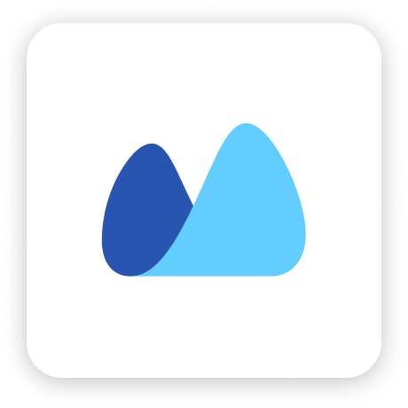

40 отдельных подключений
- Ключи от систем лежат в коде каждого агента
- Агенты не знают друг о друге и не передают задачи
- Один клиент — разные записи в amoCRM и 1С
- После ошибки — расследование по 10 разным логам
Все ИИ-агенты компании — Яндекса, Сбера, Битрикса или ваши собственные — подключаются к 1С, Битрикс24, amoCRM и МоемуСкладу через Verity. Они работают как одна команда, а каждое их действие проверяет и разрешает агент-контролёр Verity — автоматически, по вашим данным. Человек нужен только в крайнем случае.
Агенты разных компаний обслуживают клиента вместе: поддержка, склад и учёт. Verity передаёт задачи между ними, а агент-контролёр проверяет права, сверяет данные и сам решает — разрешить или вернуть на исправление. Человек нужен только в крайнем случае.

Демонстрационные данные. Стоимость по тарифу: чтение 0,15 ₽, действие 0,85 ₽, проверка текста 1,2 ₽.
Когда у компании появляется десяток агентов, каждый подключается к каждой системе отдельно. Verity превращает это в одно управляемое подключение.
Агент предлагает. Источники подтверждают.
Контролёр решает сам — человек только в крайнем случае.
«Договор подписан»
Диадок: подписан, подпись есть
Утверждение требует подтверждения
Разрешить ответ со ссылкой на источник
Учёт, CRM, коммуникации, модели и безопасность.
Verity связывает инструменты бизнеса с агентом —
и добавляет независимый контроль между ними.
Карта интеграций для пилотов. Состав коннекторов и доступные операции согласуем под ваш сценарий.
Подключение в одну точку уже предлагают платформы. Verity добавляет то, ради чего бизнесу можно доверить агентам деньги, склад и клиентов: права, проверку и историю.
Агент подключается один раз и получает доступ ко всем системам компании — в рамках своей роли.
Поддержка передаёт задачу складу, склад — учёту. Через шлюз, по одним правилам и с одной историей.
Агент-контролёр сам проверяет, останавливает и разрешает по правам и лимитам. Человек — только в крайнем случае.
Остаток, цена, скидка и сумма сверяются с 1С и МоимСкладом до того, как ответ ушёл клиенту.
Мы не делаем своих агентов и не продаём модель — поэтому одинаково честно проверяем всех.
Иванов в amoCRM, Битриксе и 1С — один клиент. Товар в МоёмСкладе и 1С — один товар.
Кто, что, когда и по какому правилу. Ответ на «кто разрешил скидку 30%?» — за секунды.
Глубокие подключения к 1С, МоемуСкладу, Битрикс24 и amoCRM. Данные хранятся в России по 152-ФЗ.
Уверенный ответ не равен достоверному.
Посмотрите, как отдельный контур сопоставляет ответ с источниками, а действие — с разрешениями.
Если отправить сразу: предположение станет основанием для действия.
Подпись ответственного отсутствует.
Утверждение «согласован» требует подтверждения в системе.
Ожидает запускаНе отправлять неподтверждённый ответ. Запросить решение ответственного.
«Согласование не подтверждено. Дождитесь решения ответственного».
Проверка опирается на доступные источники и заданные правила.
Недостаточно данных — результат не считается подтверждённым.
Скоро у каждой компании будет смесь агентов от разных поставщиков. Им нужен один независимый судья, который проверяет всех одинаково — на ваших данных.
Наш единственный агент — контролёр. Мы не конкурируем с теми, кого проверяем.
YandexGPT, GigaChat, Claude, собственные агенты — правила одни для всех.
Историю, правила и сопоставления можно выгрузить в любой момент.
Видно, какое правило сработало и почему действие остановлено.
Бухгалтерию проверяет аудитор, а не сама компания. ИИ-агентов — Verity.
| Агент | Действий | Нарушений | Ошибок в фактах | Надёжность |
|---|---|---|---|---|
| Агент поддержкиYandexGPT | 12 400 | 18 | 41 | |
| Агент документовGigaChat | 3 100 | 4 | 7 | |
| Агент складаСобственный | 8 900 | 52 | 3 | |
| Агент продажИнтегратор | 5 600 | 9 | 12 |
Подключение — за минуты, без внедренцев. В кабинете видно, сколько ошибок остановлено и на какую сумму.
Для первого агента
Пакеты со скидкой за объём
Для компаний и интеграторов
Предварительные условия раннего доступа.
Выберите системы, задайте права агентов и правила.
Первые 2 000 проверок — бесплатно.
1С, Битрикс24, amoCRM, МойСклад — авторизация за минуты
Любые модели подключаются по одному адресу
Права и лимиты — решения принимает контролёр